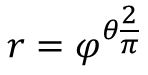
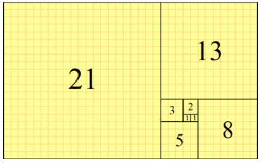

如果你想玩玩線條之美，黃金螺線應該是個不錯的入門選擇，若以極座標 (r, Θ) 表示的話，黃金螺線的公式是：

其中 φ 是黃金比例 (1 + sqrt(5)) / 2，有了公式，可以很快地畫出黃金螺線：
在 p5.js 中想指定點繪製多個線段的話，可以透過 beginShape、vertex 與 endShape，這本來是用來畫多邊形，不過在不填滿、不封閉線段（呼叫 endShape 不指定 CLOSE）的情況下，就可以繪製多個線段。
黃金螺線另一個常為人所知的事實是跟黃金矩形有關，而黃金矩形又跟費式數列有關，在維基百科的〈費氏數列〉條目中，有個黃金矩形圖片，其由數個正方形組成，而正方形的邊長關係，就符合費式數列：

黃金螺線可以將黃金矩形中每個正方形的兩個對角，使用一個弧連接起來，弧的半徑就是費式數。例如：
p5.js 中想繪製弧的話，可以透過 arc，想繪製正方形可以使用 square，或者是使用 rect，在寬高指定相同的值就可以了。
黃金矩形由內往外畫時，就是不斷地重複，始終以黃金比例擴張，如果從另一個方向來看，取一個黃金矩形，依黃金比例切割，還是黃金矩形，既然黃金螺線可基於黃金矩形繪製，當然也有這種自相似性，用動畫來表示的話：
好吧！如果你仔細研究這段動畫的程式碼，會發現其實只是不斷地在重複某個 scale 週期罷了，並不是真的在切割黃金矩形，然而在動畫上要呈現自相似性，這樣確實就夠了，畢竟自相似性嘛！你真的去做切割，呈現的效果也會是一樣的。
從黃金螺線出發，你可以玩玩其他的螺線，每種其實各有其特色與用途，附帶一提的是，常有人說鸚鵡螺的橫剖面是黃金螺線，其實只是近似，鸚鵡螺的橫剖面可以用對數螺線表示，而黃金螺線是對數螺線的一個特例罷了。